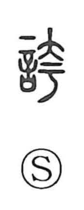

誇

Uncategorized
Kun: hokoru | On: ko
to boast ・ to be proud
Explanation
誇 is a phono-semantic character: the speech element 言 combines with the phonetic 夸, which supplies the on reading ko and evokes a form opened wide. Shirakawa describes 夸 as the figure of a large blade and links it to actions that spread or cut broadly—seen in 刳 (egu, “to gouge, scoop out,” cutting flesh with such a knife) and in 跨 (ko, “to straddle”). From this imagery of something made grand and opened wide, adding 言 shifts the meaning to speech that is made larger than life—words exaggerated before others—hence “to boast.” This nuance remains in compounds like 浮誇 (fuko, showy and inflated) and 誇誕 (kotan, extravagant and preposterous).